Project 2: Fun with Filters and Frequencies
Ray Sun · CS 180 · Fall 2026
Part 1 explores blur, derivatives, and edges. Part 2 uses spatial frequencies to sharpen photographs, create hybrid images, and blend at multiple scales.
1.1 · Convolution from scratch
Both implementations flip the kernel, zero-pad the image, and return the same input dimensions. Four loops visit each pixel and filter weight; two loops let NumPy compute the inner weighted sum.
Four loops
def convolve_four_loops(image, kernel):
"""Zero-filled 'same' convolution, with one loop per array dimension."""
image, padded, flipped = prepare(image, kernel)
height, width = image.shape
kh, kw = flipped.shape
output = np.zeros_like(image)
for y in range(height):
for x in range(width):
for ky in range(kh):
for kx in range(kw):
output[y, x] += padded[y + ky, x + kx] * flipped[ky, kx]
return outputTwo loops
def convolve_two_loops(image, kernel):
"""Same operation, with the kernel's multiply-and-sum handled by NumPy."""
image, padded, flipped = prepare(image, kernel)
height, width = image.shape
kh, kw = flipped.shape
output = np.zeros_like(image)
for y in range(height):
for x in range(width):
patch = padded[y:y + kh, x:x + kw]
output[y, x] = np.sum(patch * flipped)
return outputShared padding
Float64 preserves negative derivatives. Zero padding treats the exterior as black, darkening the blurred border. Even-sized filters get one extra zero on the top/left to match SciPy’s same convention.
def prepare(image, kernel):
image = np.asarray(image, dtype=np.float64)
kernel = np.asarray(kernel, dtype=np.float64)
if image.ndim != 2 or kernel.ndim != 2 or not image.size or not kernel.size:
raise ValueError("image and kernel must be nonempty 2D arrays")
kh, kw = kernel.shape
# Even kernels need the extra zero on the top/left to match SciPy's 'same'.
padded = np.pad(image, ((kh // 2, (kh - 1) // 2),
(kw // 2, (kw - 1) // 2)), mode="constant")
return image, padded, kernel[::-1, ::-1]Averaging and differentiating a portrait
The grayscale portrait is 248 × 256. The box filter averages 81 neighbors; Dx = [1, −1] and Dy = Dxᵀ measure horizontal and vertical changes. Gray is zero in both derivative displays.
box = np.ones((9, 9)) / 81
DX = np.array([[1.0, -1.0]]); DY = DX.T
outputs = [convolve_two_loops(portrait, k) for k in (box, DX, DY)]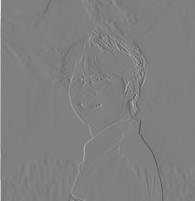
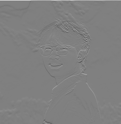
Comparison with SciPy
All methods agree within 2.22e-15. SciPy is fastest. NumPy speeds up the box filter, but per-pixel overhead makes two loops less useful for tiny derivative filters.
| Filter | Four loops | Two loops | SciPy |
|---|---|---|---|
| 9 × 9 box | 1284.11 | 99.88 | 5.45 |
| D_x | 37.43 | 90.22 | 0.50 |
| D_y | 40.48 | 93.15 | 0.65 |
1.2 · Finite difference operator
Convolving with Dx = [1, −1] measures I[y, x] − I[y, x−1]; Dy is its transpose. A large response means intensity changes quickly in that direction. Combining the two derivatives gives a direction-independent edge strength.
magnitude = √(gx² + gy²) · edge = magnitude > threshold
gx = convolve2d(image, DX, mode="same", boundary="fill", fillvalue=0)
gy = convolve2d(image, DY, mode="same", boundary="fill", fillvalue=0)
magnitude = np.hypot(gx, gy)
edges = magnitude > 0.12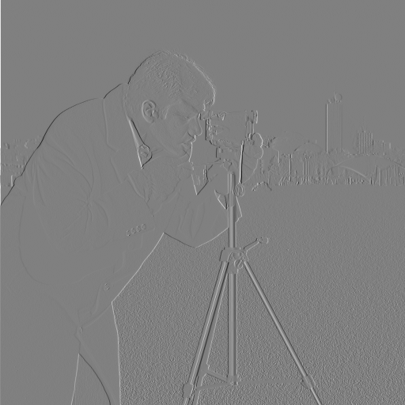
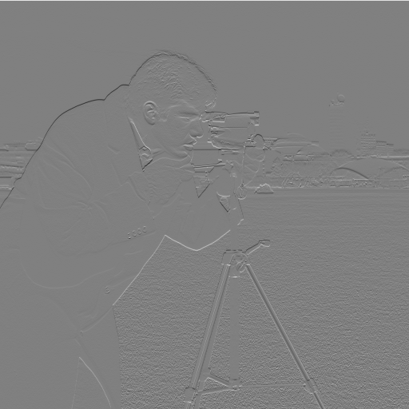
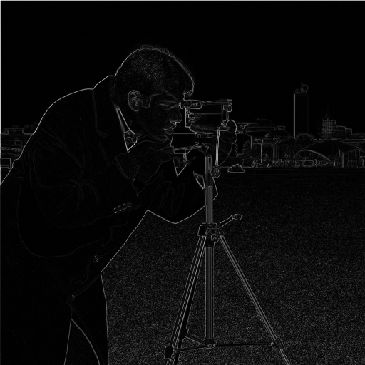
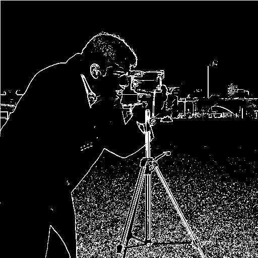
The x/y displays share a symmetric ±0.969 range. All cameraman magnitude displays on this page share a range from 0 to 1.109, the raw magnitude maximum. Thresholds operate on the original float values, before display scaling.
Choosing the threshold
At 0.08, more weak contours survive, but so does dense ground texture. At 0.18, much of that texture disappears along with weaker parts of the subject and background. A threshold of 0.12 retains the main silhouette, camera, and tripod while removing some weaker responses. It still leaves visible ground texture; thresholding alone cannot distinguish texture from object boundaries.
Zero padding also makes a bright image boundary look like an edge against a black exterior. Those border responses remain visible here so the padding convention is explicit.
1.3 · Derivative of Gaussian
A Gaussian blur suppresses small intensity fluctuations before differentiation. The Gaussian uses a 9 × 9 support and σ = 1.5 pixels. OpenCV constructs a normalized 1D Gaussian; its outer product forms the 2D filter.
column = cv2.getGaussianKernel(9, 1.5)
gaussian = column @ column.T
dog_x = convolve2d(gaussian, DX, mode="full")
dog_y = convolve2d(gaussian, DY, mode="full")

After smoothing, the main outline is more continuous and the fine ground texture is reduced. The magnitude is lower and the transitions are wider. Because smoothing reduces edge strength, the raw threshold of 0.12 would discard useful contours; the smoothed result uses 0.04.
At 0.02, more weak background and ground structure remains. At 0.06, fewer distracting responses survive, but weaker contours break apart. The selected 0.04 keeps the subject and camera structure while reducing the fine texture seen with finite differences alone. The lost small details are the tradeoff for smoother edges.
The filters themselves
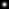
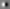
The Gaussian is shown from zero (black) to its maximum (white). Both DoG displays use the same symmetric range, ±0.02768, with zero in middle gray. Their positive and negative lobes measure change after local averaging. Full convolution preserves the complete filter support, including the extra column or row introduced by the two-tap derivative.
Two convolutions or one?
(I * G) * Dx = I * (G * Dx)
Associativity lets the derivative be applied to the Gaussian first. Once the DoG kernels are prepared, each derivative needs just one convolution with the image. The comparison below uses the same input, kernels, zero extension, final crop, and threshold.
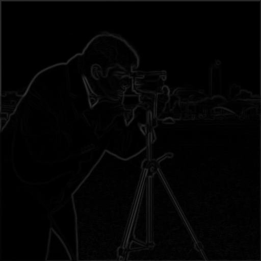


Agreement
Maximum magnitude difference: 8.26e-16. The binary maps differ at 0 pixels.
Boundary handling
Both routes keep the full convolution and crop only once at the end. Cropping between filters would change the padding and introduce border differences.
2.1 · Image sharpening
A Gaussian blur keeps low frequencies. Subtracting it leaves fine detail; adding α times that detail makes edges stronger.
sharp = I + α(I − G * I)
Combining the steps gives one unsharp mask filter, with δ equal to an impulse:
kernel = (1 + α)δ − αG
Taj Mahal


Telegraph Avenue

α = 0.5 is subtle; α = 1 strengthens stonework and bricks; α = 2 adds visible halos and emphasizes noise. The single-filter and blur/subtract/add implementations agree within 1.33e-15.
Blur, then sharpen
The street photo is blurred at σ = 2, then sharpened with σ = 2 and α = 1.5. Edges regain contrast, but fine detail stays soft. MSE falls from 0.00919 to 0.00719; sharpening does not fully undo the blur.
2.2 · Hybrid images
Combine the low frequencies of one image with the high frequencies of another. Fine detail dominates nearby; the broad shapes emerge farther away.
Kendrick + Drake
Drake supplies the low frequencies and Kendrick the high frequencies. Kendrick's fine features stand out nearby; Drake's broad face appears in the small view. Different facial proportions leave some overlapping mouth and cheek contours.

Sources and alignment
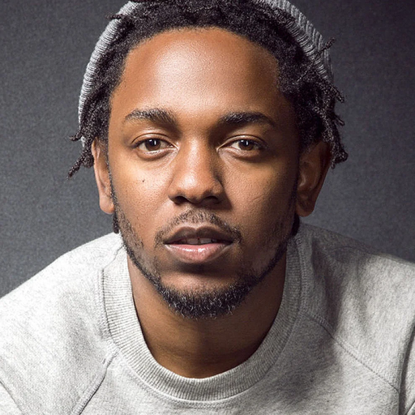
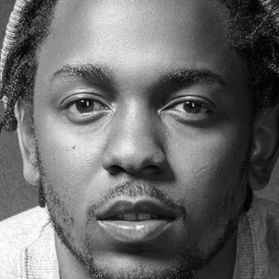
Rotation, uniform scale, and translation align the eyes at (120, 150) and (280, 150) on a 400 × 400 grayscale canvas. Both aligned images stay within their source photographs.
Filtering
low = blur(drake, 14)
high = kendrick - blur(kendrick, 4)
hybrid = low + 1.5 * high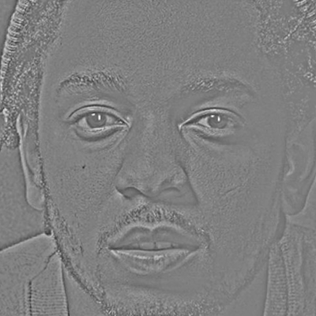
Choosing the frequency split
Gain stays at 1.5. The 6/2 split leaves more Drake detail nearby. The selected 14/4 split makes Kendrick clearer, at the cost of more ghosting.
Reversing the same pair
Swap the same two photographs: Kendrick supplies low frequencies and Drake high frequencies. Alignment, σ = 14/4, and gain = 1.5 stay fixed.
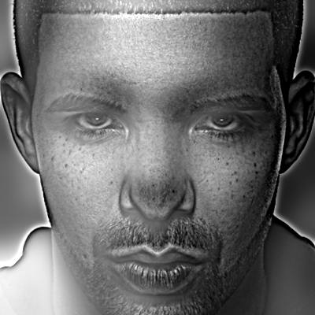
Fourier analysis
Log-magnitude spectra share the same scale. Low-pass energy concentrates near the center; high-pass filtering suppresses that center. The hybrid combines both frequency ranges.
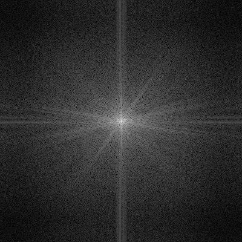
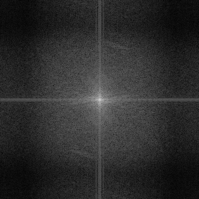
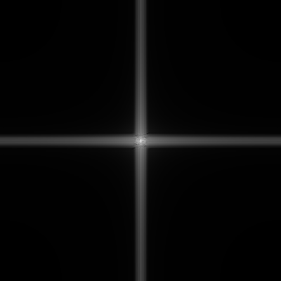
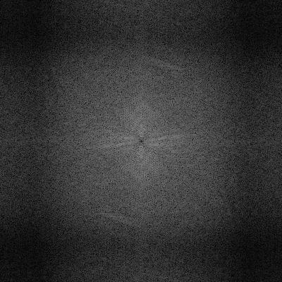
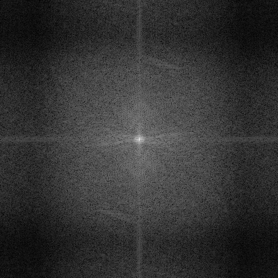
Computed with log1p(abs(fftshift(fft2(image)))) on unclipped arrays.
The other pairs also use grayscale and eye alignment on a 400 × 400 canvas. Nutmeg needs reflected border pixels (3.9% of the canvas). Small views are the same results reduced to 40 pixels.
Derek + Nutmeg
σ low/high = 7/4; gain = 1. Nutmeg's fur and eyes dominate nearby; Derek's face becomes clearer at a distance. The ears still leave some ghosting.
Outdoor smile + indoor portrait
σ low/high = 6/3; gain = 1. Glasses and the neutral expression dominate nearby; the outdoor smile appears farther away. Different head poses leave some overlapping contours.
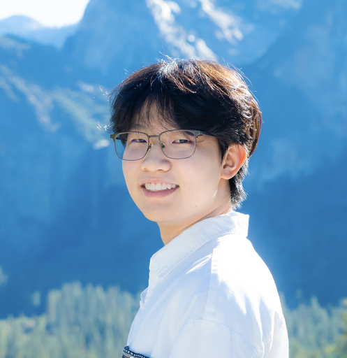
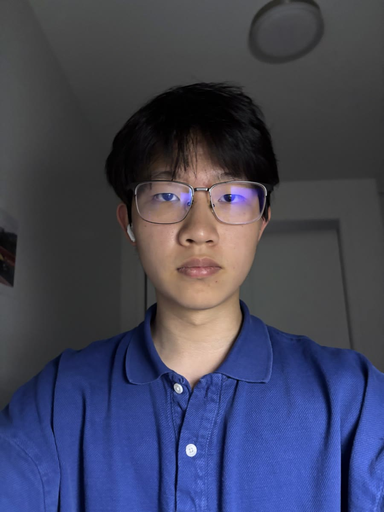
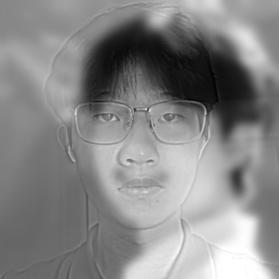
2.3 · Gaussian and Laplacian stacks
Gaussian stack
Blur the original at σ = 2, 4, 8, 16, and 32. G0 is the input. Every level keeps the same resolution, with no downsampling or built-in pyramid functions.
Laplacian stack
Lk = Gk − Gk+1. The last level keeps G5. Adding all six levels reconstructs the original, including its broad color and brightness.
Gaussian levels
Apple

Orange
Laplacian levels
Gray is zero. Each band has its own display scale, shared by apple and orange; the residual uses ordinary RGB values.
Apple
Orange

Figure 3.42 (a)–(l)
Columns: masked apple, masked orange, and their sum. Rows: L0, L2, L4, then reconstruction using all six levels.
Each frequency row shares one signed scale. The bottom contributions are clipped previews; the final blend adds the raw contributions before clipping.
Basketball + soccer across scales
Fine bands retain the seams and surface texture; coarse levels keep the round shape and broad shading. Selected levels of the final blend:


Golden Gate across scales
Fine bands isolate cables and foliage; coarse levels retain towers, hills, and the transition to color. Selected levels of the final blend:


2.4 · Multiresolution blending
Build Laplacian stacks for the images and a Gaussian stack for the mask. Blend each band with its matching mask, then add the bands. Fine detail crosses a narrow seam while broad color transitions more gradually.
result = Σ [MkLAk + (1 − Mk)LBk]
Apple + orange
A vertical mask selects apple on the left and orange on the right. Multiresolution blending softens the color seam while keeping the texture.


Mask across scales


Basketball + soccer
Both balls are centered and resized to a 256-pixel diameter on a 320 × 320 white canvas. A simple vertical mask joins the basketball’s left half to the soccer ball’s right half. The silhouette stays continuous while orange fades into white.


Golden Gate · construction to 2013
The 1930s photograph and the 2013 view are aligned at two tower tops. A curved, irregular mask joins construction on the left to the finished bridge on the right. The viewpoints are close, but foreground and cable differences remain.


.jpg){kind=link}


Golden Gate · masked frequency bands
Construction-era contribution, 2013 contribution, and their sum at L0, L2, and L4. The last row reconstructs all six levels, including the residual. Display conventions match Figure 3.42 above.


Lesson I learned
The biggest lesson was that different spatial frequencies need different treatment. Sharpening strengthens existing detail, hybrid images change which features stand out at a distance, and multiresolution blending softens color transitions while preserving texture. These operations can change how an image looks, but they cannot recover missing detail or fix mismatched geometry.